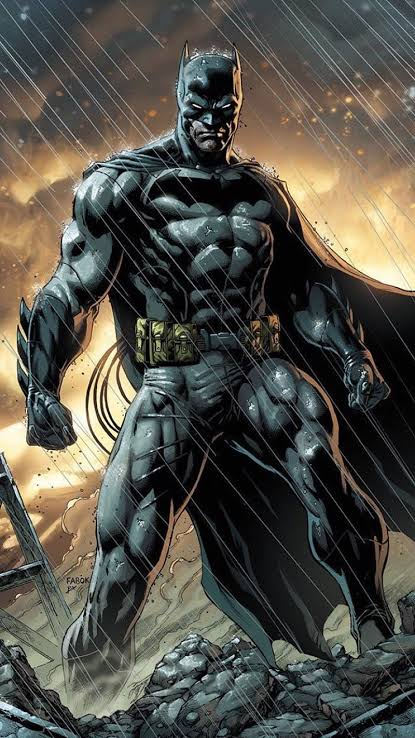

Who Is Batman?
Batman is the secret identity of Bruce Wayne. He has no superpowers, so he protects Gotham City with detective skills, discipline, technology, and careful preparation.
Challenges and Victories
- Turned the loss of his parents into a lifelong mission to protect others.
- Repeatedly outsmarted the Joker and stopped his plans against Gotham.
- Helped form the Justice League and earned the trust of super-powered teammates.
- Defeated stronger enemies by studying their weaknesses and preparing a plan.
Why I Chose Him
I chose Batman because he shows that courage, intelligence, and preparation can make an ordinary human stand beside superheroes.
POW!